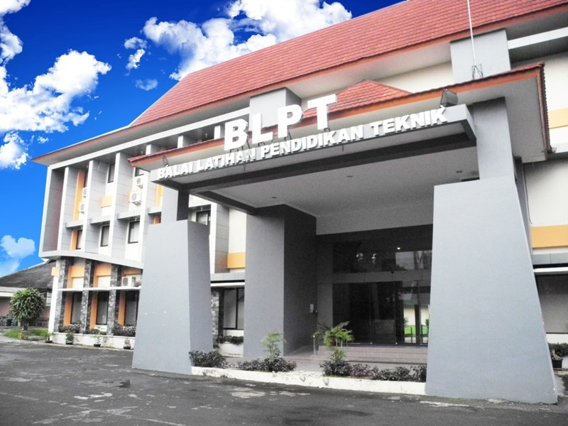

SEJARAH BLPT JOGJA

BLPT Yogyakarta diresmikan oleh Menteri Pendidikan dan Kebudayaan Republik Indonesia pada hari Selasa, 31 Maret 1981 beserta 3 (tiga) BLPT lainnya yaitu BLPT Padang, BLPT Palembang dan BLPT Semarang. Dengan demikian di Indonesia terdapat 9 ( sembilan ) BLPT dimana 5 BLPT sudah diresmikan sebelumnya yaitu : BLPT Jakarta, BLPT Bandung, BLPT Surabaya, BLPT Medan , BLPT Ujung Pandang.
Sejak diberlakukannya Otonomi Daerah Tahun 2001, BLPT diserahkan kepada Pemerintah Provinsi Daerah Istimewa Yogyakarta sebagai Unit Pelaksana Teknis Daerah (UPTD) di bawah Dinas Pendidikan, Pemuda dan Olahraga Provinsi Daerah Istimewa Yogyakarta. Sejak saat itu pula BLPT dikembangkan tugas pokok dan fungsinya untuk melayani Pendidikan dan Pelatihan bagi Sekolah Menengah Kejuruan (SMK) Negeri/Swasta, Perguruan Tinggi Negeri/Swasta, Instansi/Lembaga, Dunia Usaha/Dunia Industri dan Masyarakat Umum dari DIY maupun Luar DIY. Piagam tersebut diserahkan langsung oleh Presiden Republik Indonesia pada tanggal 31 Oktober 2008. Pada tanggal 7 dan 8 Oktober 2010 telah dilakukan survaillace audit untuk migrasi ke SMM ISO 9001:2008, dan dinyatakan layak menerapkan SMM ISO 9001:2008 mulai tanggal 9 Desember 2010 dengan Quality System Certification-Certificate No. QSC 00516.
Upaya peningkatan kualitas BLPT terus menerus dilaksanakan, salah satu upaya tersebut adalah dengan diterapkannya Sistem Manajemen Mutu ISO 9001:2000. Sejak tanggal 23 Maret 2006 BLPT berhasil mendapatkan Sertifikat ISO 9001:2000. Kemudian pada tahun 2008 BLPT kembali menunjukkan prestasi dalam hal pelayanan kepada publik. Hal ini terbukti dengan diberikannya penghargaan dari Menteri Negara Pendayagunaan Aparatur Negara berupa Piagam Penghargaan Citra Pelayanan Prima kepada BLPT.